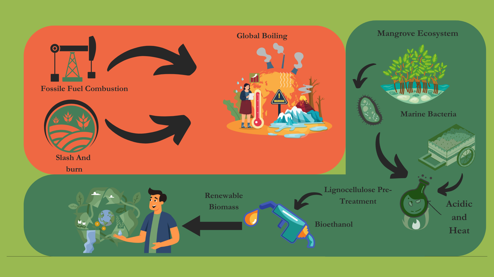
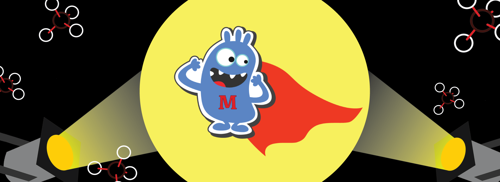

Presentations
Tales of Harnessing Poly-Extremozymes
Type: Oral
Date: Mar, 2025
Conference: Current Perspectives on Extremophiles and their Biomolecules
Location: Bhopal, India

Poly-extremophilic Cellulases: Goan Mangroves' Answer to Climate-Friendly Biofuels
Type: Poster
Date: Feb, 2025
Conference: OSICON 2025
Location: Panaji, India
Poly-Extremophiles: Exploring Their Diversity and Potential for Industrial Applications.
Type: Poster and Oral
Date: Sept, 2023
Conference: Samudramanthan 2023
Location: Panaji, India

Mysteries of Poly-Extremophiles for Sustainable Future
Type: Oral
Date: Sept, 2022
Conference: World Biotechnology Industry Conference-2022
Location: Qingdao, China

Analysing the effects of COVID 19 on Tribal Communities based on Environmental Parameters.
Type: EO Dashboard challenges
Date: Jun, 2021
Conference: EO Dashboard Hackathon
Location: Boston, USA

MethNote-A prototype of Methane Biosensor
Type: Poster and Oral
Date: Oct, 2018
Conference: iGEM Giant Jamboree
Location: Boston, USA